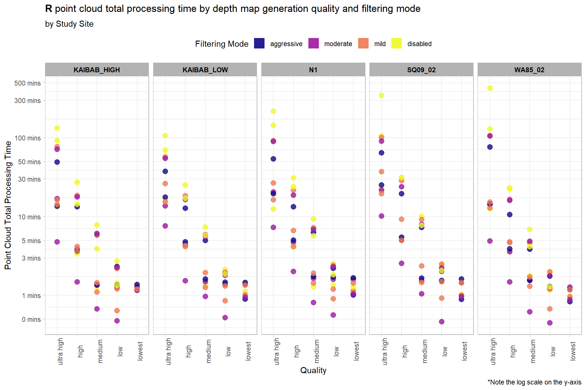
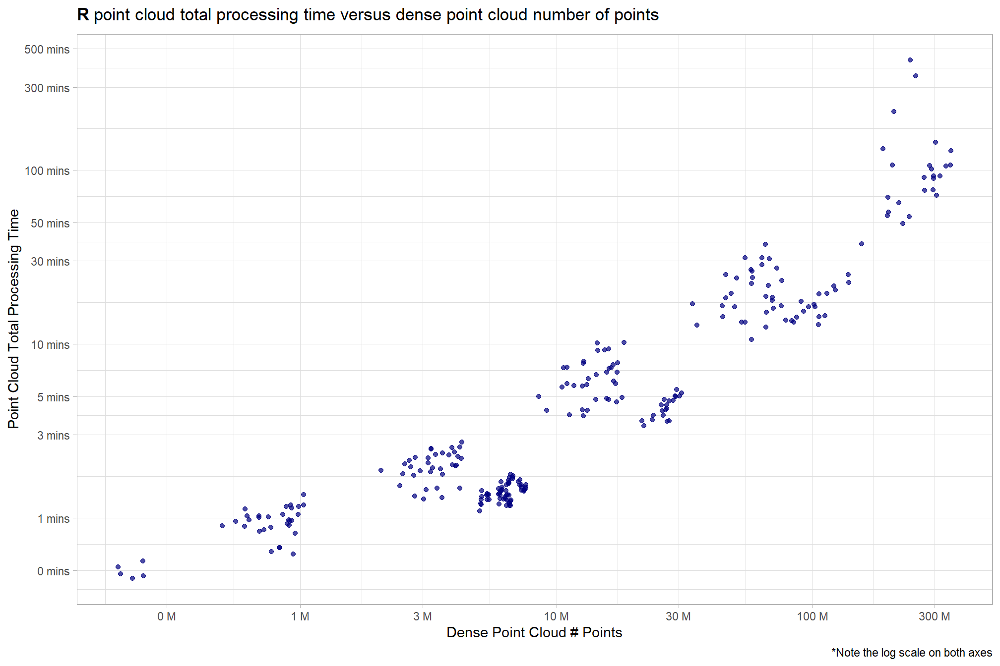

Section 3 R Point Cloud Processing
After running the UAS point cloud processing script in R…the processing tracking data file is used to compare summary statistics on point cloud processing times.
ptcld_processing_data = readr::read_csv(file = "../data/ptcld_processing_tracking_data.csv") %>%
dplyr::rename(
depth_maps_generation_quality = processing_attribute1
, depth_maps_generation_filtering_mode = processing_attribute2
) %>%
dplyr::mutate(
depth_maps_generation_quality = factor(
depth_maps_generation_quality %>%
tolower() %>%
stringr::str_replace_all("ultrahigh", "ultra high")
, ordered = TRUE
, levels = c(
"lowest"
, "low"
, "medium"
, "high"
, "ultra high"
)
) %>% forcats::fct_rev()
, depth_maps_generation_filtering_mode = factor(
depth_maps_generation_filtering_mode %>% tolower()
, ordered = TRUE
, levels = c(
"disabled"
, "mild"
, "moderate"
, "aggressive"
)
) %>% forcats::fct_rev()
)3.1 Processing Time Summary
Total processing time by depth map generation quality and depth map filtering mode
ptcld_processing_data %>%
ggplot(
mapping = aes(
x = depth_maps_generation_quality
, y = timer_total_time_mins
, color = depth_maps_generation_filtering_mode
, fill = depth_maps_generation_filtering_mode
)
) +
geom_boxplot(alpha = 0.6) +
scale_color_viridis_d(option = "plasma") +
scale_fill_viridis_d(option = "plasma") +
scale_y_log10(
labels = scales::comma_format(suffix = " mins", accuracy = 1)
, breaks = scales::breaks_log(n = 9)
) +
labs(
color = "Filtering Mode"
, fill = "Filtering Mode"
, y = "Point Cloud Total Processing Time"
, x = "Quality"
, title = bquote(
bold("R") ~
"point cloud total processing time by depth map generation quality and filtering mode"
)
, caption = "*Note the log scale on the y-axis"
) +
theme_light() +
theme(
legend.position = "top"
, legend.direction = "horizontal"
) +
guides(
color = guide_legend(override.aes = list(shape = 15, size = 6, alpha = 0.9))
)
Notice there are some outlier study sites in the point cloud processing time
ptcld_processing_data %>%
ggplot(
mapping = aes(
y = timer_total_time_mins
, x = depth_maps_generation_quality
, color = depth_maps_generation_filtering_mode
)
) +
geom_point(size = 3, alpha = 0.8) +
facet_grid(
cols = vars(study_site)
, labeller = label_wrap_gen(width = 35, multi_line = TRUE)
) +
scale_color_viridis_d(option = "plasma") +
scale_y_log10(
labels = scales::comma_format(suffix = " mins", accuracy = 1)
, breaks = scales::breaks_log(n = 9)
) +
labs(
color = "Filtering Mode"
, y = "Point Cloud Total Processing Time"
, x = "Quality"
, title = bquote(
bold("R") ~
"point cloud total processing time by depth map generation quality and filtering mode"
)
, subtitle = "by Study Site"
, caption = "*Note the log scale on the y-axis"
) +
theme_light() +
theme(
legend.position = "top"
, legend.direction = "horizontal"
, strip.text = element_text(color = "black", face = "bold")
, axis.text.x = element_text(angle = 90)
) +
guides(
color = guide_legend(override.aes = list(shape = 15, size = 6, alpha = 0.9))
)
3.2 Processing Time vs # Points
ptcld_processing_data %>%
ggplot(
mapping = aes(
x = number_of_points
, y = timer_total_time_mins
)
) +
geom_point(alpha = 0.7, color = "navy") +
scale_y_log10(
labels = scales::comma_format(suffix = " mins", accuracy = 1)
, breaks = scales::breaks_log(n = 9)
) +
scale_x_log10(
labels = scales::comma_format(suffix = " M", scale = 1e-6, accuracy = 1)
, breaks = scales::breaks_log(n = 6)
) +
labs(
y = "Point Cloud Total Processing Time"
, x = "Dense Point Cloud # Points"
, title = bquote(
bold("R") ~
"point cloud total processing time versus dense point cloud number of points"
)
, caption = "*Note the log scale on both axes"
) +
theme_light()
3.3 Processing Section Timing
ptcld_processing_data %>%
dplyr::select(
depth_maps_generation_quality
, tidyselect::ends_with("_mins")
) %>%
dplyr::select(-c(timer_total_time_mins)) %>%
tidyr::pivot_longer(
cols = -c(depth_maps_generation_quality)
, names_to = "section"
, values_to = "mins"
) %>%
# dplyr::count(depth_maps_generation_quality, section)
dplyr::group_by(depth_maps_generation_quality, section) %>%
dplyr::summarise(med_mins = median(mins)) %>%
dplyr::group_by(depth_maps_generation_quality) %>%
dplyr::mutate(
total_mins = sum(med_mins)
, pct_mins = med_mins/total_mins
) %>%
dplyr::ungroup() %>%
dplyr::mutate(
section = section %>%
stringr::str_remove_all("timer_") %>%
stringr::str_remove_all("_time_mins") %>%
factor(
ordered = T
, levels = c(
"tile"
, "denoise"
, "classify"
, "dtm"
, "normalize"
, "chm"
, "treels"
, "itd"
, "estdbh"
, "competition"
, "silv"
)
, labels = c(
"Tile"
, "Denoise"
, "Classify"
, "DTM"
, "Normalize"
, "CHM"
, "TreeLS SfM DBH"
, "CHM I.T.D."
, "Local DBH Est."
, "Tree Competition"
, "Silvicultural Metrics"
)
) %>% forcats::fct_rev()
) %>%
ggplot(
mapping = aes(x = pct_mins, y = depth_maps_generation_quality, fill=section, group=section)
) +
geom_col(
width = 0.7, alpha=0.8
) +
geom_text(
mapping = aes(
label = scales::percent(ifelse(pct_mins>=0.06,pct_mins,NA), accuracy = 1)
, fontface = "bold"
)
, position = position_stack(vjust = 0.5)
, color = "black", size = 4
) +
scale_fill_viridis_d(option = "turbo") +
scale_x_continuous(labels = scales::percent_format()) +
labs(
fill = "R script\nsection"
, y = "Metashape depth map quality"
, x = "% Point Cloud Total Processing Time"
, title = bquote(
bold("R") ~
"point cloud total processing time by Metashape depth map generation quality and R script section"
)
, subtitle = "Median across study site and Metashape depth map filtering mode "
) +
theme_light() +
theme(
legend.position = "top"
, legend.direction = "horizontal"
, legend.title = element_text(size=7)
, axis.title.x = element_text(size=10, face = "bold")
, axis.title.y = element_text(size = 8)
, axis.text.x = element_blank()
, axis.text.y = element_text(color = "black",size=10, face = "bold")
, axis.ticks.x = element_blank()
) +
guides(
fill = guide_legend(nrow = 3, byrow = T, reverse = T, override.aes = list(alpha = 0.9))
)